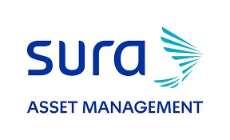
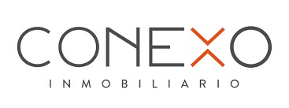
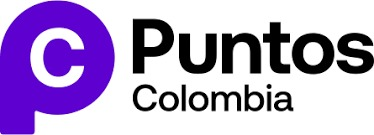
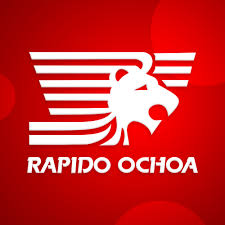
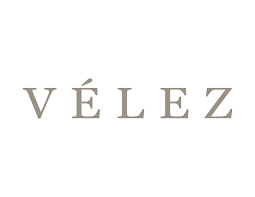
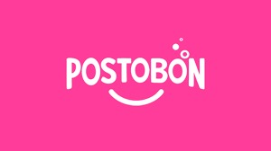
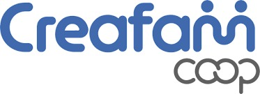
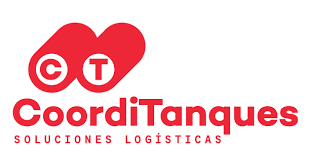

Por Royman Guao
Uno de los impactos del incremento del Salario mínimo
Cuando el salario mínimo cambia tu población objetivo
Leer Más...Acompañamos a equipos directivos y líderes de Gestión Humana a tomar decisiones sobre estructura, compensación e incentivos con criterio técnico, visión de negocio y soluciones aplicables.
Más de 150 soluciones implementadas en compensación y diseño organizacional.









Hay momentos en los que una decisión de estructura, compensación o talento deja de ser solamente un asunto de Gestión Humana y empieza a tener impacto directo sobre la estrategia, los costos y los resultados.
Aparecen cargos, niveles y responsabilidades sin una lógica común. Hay duplicidades, decisiones sin dueño o capacidades que la estrategia necesita y la organización todavía no tiene.
Revisar estructura organizacionalSurgen inequidades, dificultades para atraer determinados perfiles, diferencias difíciles de explicar o incrementos que dependen más de excepciones que de una política clara.
Fortalecer la estrategia de compensaciónLos incentivos pueden estar premiando resultados que ya no representan las prioridades comerciales, financieras u operativas de la organización.
Revisar compensación variableDatos de mercado, estructuras, salarios, indicadores y escenarios existen, pero convertirlos en una decisión ejecutiva requiere análisis y una lectura integral del negocio.
Convertir información en decisionesConvertimos problemas de estructura, compensación e incentivos en análisis aplicables, criterios de decisión y soluciones alineadas con la estrategia del negocio.
Ideas y análisis para tomar mejores decisiones de compensación, estructura y talento.
Cuando el salario mínimo cambia tu población objetivo
Leer Más...Si frente al aumento de costos solo estás hablando de salarios, el análisis está incompleto...
Leer Más...El incremento del salario mínimo está generando compresión en empresas muy distintas....
Leer Más...Royman Guao, socio fundador de RG Business Partners, acompaña a las organizaciones en decisiones de compensación y diseño organizacional con una mirada que combina criterio técnico, comprensión del negocio y cercanía en el proceso. Su trabajo busca que cada recomendación sea confiable, aplicable y acompañada hasta su implementación, de modo que la organización pueda avanzar con claridad sin perderse en la complejidad técnica.
Más de 150 soluciones implementadas en compensación y diseño organizacional.
Si estás evaluando decisiones relacionadas con compensación, diseño organizacional o productividad, podemos iniciar una conversación para analizar el contexto y los siguientes pasos. Puedes contactarnos por teléfono o correo electrónico, o dejar tus datos y nos comunicaremos contigo.
Antioquia, Medellín
Envíame tu consulta por correo electrónico